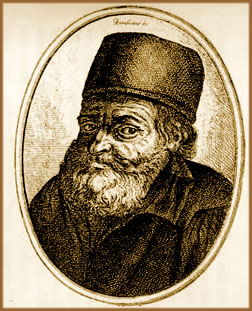
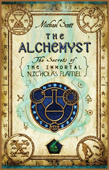
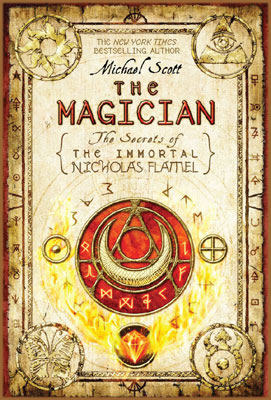

Nicolas Flamel foi um alquimista
francês que viveu entre os séculos XIII e XIV. No
entanto, sua biografia é repleta de lacunas que dão
vazão às inúmeras especulações.
Sabe-se que nasceu na cidade francesa de Pontoise em 1330. No
início de sua juventude, após a perda dos pais,
foi à Paris trabalhar e casou-se com a viúva Perrenelle;
mulher ligeiramente mais velha, dona de uma inteligência
e astúcia ímpares.
A partir deste momento, até
sua morte, os fatos da vida de Flamel se combinam com lendas e
geram uma aura mística em torno de sua figura, mas que,
no entanto, não se pode atribuir credibilidade sem antes
uma pesquisa mais profunda e criteriosa.
A
Iniciação
Seu
contato com a alquimia se inicia em torno de 1370 quando, então
aos quarenta anos de idade e proprietário de uma livraria,
Flamel sonha com um anjo lhe entregando um livro misterioso. Pouco
tempo depois, um homem desconhecido entra em sua livraria e oferece-lhe
um antigo manuscrito. Flamel identificou aquele livro como o que
lhe fora entregue pelo anjo durante o sonho e comprou-o imediatamente.
Segundo sua própria citação:
"Quando faleceram meus pais tive que ganhar o pão
escrevendo; naquele tempo adquiri um livro dourado, muito velho
e volumoso. O livro compunha-se de três fascículos
de sete folhas cada um e a sétima folha de cada um aparecia
em branco. Na primeira folha via-se um báculo em torno
do qual apareciam enroscadas duas serpentes; na segunda, uma cruz
da qual pendia outra serpente e na sétima podia ver-se
um deserto, no centro do qual brotavam formosas fontes; porém
delas não saiam água senão serpentes que
se arrastavam em todas as direções".
A iniciação é
narrada pelo próprio Flamel com as seguintes palavras:
"Todavia trabalhei uns três anos, até que
finalmente encontrei o elixir (havia trabalhado 21 anos) que imediatamente
se reconhece por seu forte odor. Primeiro o projetei sobre uma
libra e meia de mercúrio e obtive desse modo igual quantidade
de prata; isso ocorreu em minha casa, estando presente unicamente
minha esposa Perenelle; mais tarde, atendo-me escrupulosamente
a cada palavra de meu livro, projetei a pedra vermelha sobre uma
quantidade quase igual de mercúrio na mesma casa e de novo
estava presente minha esposa Perenelle. Realizei a obra por três
vezes com a ajuda de Perenelle, pois como havia-me ajudado no
trabalho, o entendia exatamente como eu"
Ainda sobre o enigmático
escrito, Flamel cita que constava o método de transmutação
de metais. Ilustrando esta técnica, havia a representação
de dois recipientes e da Pedra Filosofal. Uma menção
mais consistente, porém, tão misteriosa diz que
"Um rosal florido no meio do jardim; no solo junto às
rosas uma fonte da qual emanava água branquíssima,
que logo a uma distância respeitável precipitava-se
num abismo. Muitas pessoas cavavam ao longo de seu curso, com
as mãos na terra, tratando de encontrar a fonte, porém
não conseguiam êxito porque eram cegas; somente um
foi capaz – ele encontrou a água".
Esta descrição pode
representar alegoricamente a rosa como indicador da cristalização
dos corpos solares e a fonte como a "fonte da água
viva". Assim, a humanidade, mesmo tendo a fonte ao alcance,
não possui discernimento para compreendê-la e acaba
por desperdiçá-la. Desse modo, somente o "Iniciado"
ou o "Desperto" teria lucidez para percebê-la
e interpretá-la como um elemento essencial na composição
alquímica.
Assim iniciam-se seus estudos baseado
no conteúdo da obra. No entanto, sem possuir conhecimento
necessário para interpretá-lo e decifrá-lo,
não atinge um nível de conhecimento suficiente para
prosseguir.
A peregrinação
alquímica
Buscando orientação, Flamel produz
cópias de alguns trechos e símbolos do misterioso
livro e parte para a Espanha, em peregrinação ao
sepulcro de São Thiago. Lá, com a ajuda de um sábio
judeu conhecido por Mestre Canches, consegue decifrar algumas
passagens e concluir que se tratava de textos e representações
gráficas sobre Cabala
e Alquimia,
incluindo ainda uma fórmula para elaboração
da Pedra Filosofal. Sendo, aparentemente, da autoria de Abraão
– O Judeu.
Canches ainda tentou acompanhar Flamel de volta
à França para dar continuidade aos trabalhos de
tradução e interpretação do manuscrito.
No entanto, devido à idade avançada e à saúde
debilitada, faleceu antes de concluir a viagem.
O
alquimista teria compreendido o sentido dos processos alquímicos,
mas não havia elucidado totalmente as matérias componentes.
O completo entendimento só foi possível com o auxílio
de Perrenelle; fato que pode aludir à necessidade da presença
feminina para o total desenvolvimento da técnica e obtenção
da "Grande
Obra".
Nos anos seguintes, desenvolve as técnicas
de transmutação de metais em prata e ouro. Assim,
torna-se possível dedicar-se às atividades filantrópicas
como a construção de hospitais, abrigos e cemitérios
nos quais, ocultos na ornamentação arquitetônica,
encontram-se diversos símbolos alquímicos. Porém,
não há registros de que, em momento algum, Flamel
e Perrenelle tenham usado as técnicas aprendidas ou os
resultados obtidos para benefício próprio.
Um fato interessante é que o alquimista,
talvez motivado por uma certa vaidade, sempre que uma capela,
hospital, cemitério ou abrigo fosse concluído, encomendava
a um escultor que representasse sua figura em duas situações
distintas: uma jovial e uma outra já com aparência
envelhecida e debilitada. Essa duas esculturas eram postas em
locais de destaque como parte da decoração.
Conta-se que Flamel e sua esposa Perrenelle, mesmo
com o passar dos anos, desfrutavam de uma saúde surpreendentemente
vigorosa. A este fato atribuí-se à supostas fórmulas
(como o elixir da juventude) que teria desenvolvido. Flamel passou
os últimos dias de sua vida fazendo anotações
sobre alquimia. Faleceu em 22 de março de 1418 e sua lápide,
que havia sido encomendada poucos dias antes, trazia esculpido
um sol, uma chave e um livro, em mais uma referência à
simbologia alquímica. Sua casa foi invadida e saqueada
por populares e mercenários que buscavam metais nobres,
jóias e as supostas poções da juventude e
vida eterna.
Lendas
e legado
Sua obra escrita também é bem rica.
O Livro das figuras Hieroglíficas (1399), O
Sumário Filosófico (1409) e Saltério
Químico de 1414 são referências de seus
estudos e práticas alquímicas ao longo dos anos.
A Biblioteca Nacional, em Paris, contém manuscritos do
próprio punho de Flamel; além de registros oficiais
como sua certidão de casamento.
Uma espécie de testamento teria sido deixado
por Flamel a um sobrinho. Este escrito contém inúmeras
anotações feitas sobre os mistérios da alquimia,
redigidas pelo próprio alquimista através de um
alfabeto codificado com 96 letras, ao longo dos anos de estudo
e prática. O Testamento de Nicolas Flamel foi
compilado na França em meados do século XVIII e
copiado por um escrivão de nome Father Pernetti, para ser
"decodificado" posteriormente. Finalmente, publicado
em Londres no início do século XIX.
Por outro lado, o manuscrito de Abraão teria
sido dado por Flamel a um sobrinho de nome Perrier. Mas a história
não faz referência nem traz registros ao sobrinho.
Durante o reinado de Luis XIII, um jovem de nome Dubois, supostamente
descendente de Flamel, tinha em seu poder um pó através
do qual, na presença do próprio rei, convertia chumbo
em ouro.
Dubois foi encaminhado a um interrogatório
com o Cardeal Richelieu. Argumentando que possuía o pó,
mas não saberia compreender os escritos de seu antepassado
e tampouco reproduzir aquela substância, Dubois teve seus
bens confiscados pela igreja e foi condenado à morte por
suposta bruxaria. Entretanto, o manuscrito de Abraão teria
sido encontrado em poder de Dubois e, após sua condenação,
subtraído por Richelieu.
Conta-se que o Cardeal levou o livro para o Castelo
de Rueil onde passou a estudá-lo por muitos anos sem atingir
qualquer resultado. Após a morte de Richelieu, não
houve mais nenhum registro ao paradeiro do velho manuscrito.
Nesta mesma época, o túmulo de Flamel
teria sido violado por ladrões que se surpreenderam ao
constatar que não havia um corpo ou tampouco vestígios
de que um dia aquele túmulo havia sido ocupado. Este fato
gerou o boato de que o alquimista nunca teria morrido. Em outra
situação, durante o reinado de Luis XIX, um arqueólogo
de nome Paul Lucas havia sido solicitado pelo próprio rei
a pesquisar e colher documentos que poderiam contribuir com o
desenvolvimento da ciência daquele tempo.
Durante
sua pesquisa, de acordo a própria narrativa, Paul Lucas
fora saqueado por ladrões que lhe destituíram todo
o material acumulado. No entanto, em Voyage dans la Turquie
publicado pelo próprio arqueólogo em 1719, conta
que conheceu pessoalmente um "filósofo" que "aparentava
não ter idade" e que fazia parte de um grupo de sete
membros que vagavam pelo mundo em busca de sabedoria e que, a
cada vinte anos, se reunia em um local diferente pré-determinado
para trocar conhecimento. Naquela ocasião, o local era
a cidade de Broussa, na Turquia.
Segundo Paul Lucas, o sábio citou que era
possível ao homem viver mais de mil anos se possuísse
o domínio sobre a Pedra Filosofal e o Elixir da Longa Vida.
Ainda, citou que Nicolas Flamel e Abraão eram componentes
daquele grupo.
De acordo com o arqueólogo, o sábio
contou que Abraão havia ido à Paris encontrar um
rabino que almejava atingir os estados elevados de conhecimento
que o labor alquímico permitira. No entanto, antes de deixar
a França, Abraão, de maneira desleal, foi morto
pelo próprio rabino que, por sua vez, desejava a posse
definitiva do livro. Pouco tempo depois o rabino foi condenado
à morte e queimado. O livro de Abraão, misteriosamente,
chegou às mãos de outro judeu que o vendeu à
Flamel. Portanto, Flamel e Perrenelle ainda viviam e os respectivos
funerais, realizados dois séculos antes, não eram
mais que fraudes bem articuladas. Após a "morte",
o casal partira para a Índia.
Flamel
na História
Nicolas Flamel foi um alquimista
medieval. Essa é a sentença que resume sua figura
ao longo da história. Porém, como é possível
compreender e concluir, Flamel foi também marido, foi um
dedicado estudante dos enigmas da alquimia, um homem de coração
nobre (e por vezes vaidoso) que aplicou seu conhecimento em benefício
comum.
De qualquer forma, a imagem
de "alquimista medieval" ainda é indissolúvel,
tanto por sua obra quanto pelos séculos que a história
solidificou sobre sua figura enigmática; e que, ainda hoje,
é base de estudo, questionamento, divagações
e admiração.
Por
Spectrum